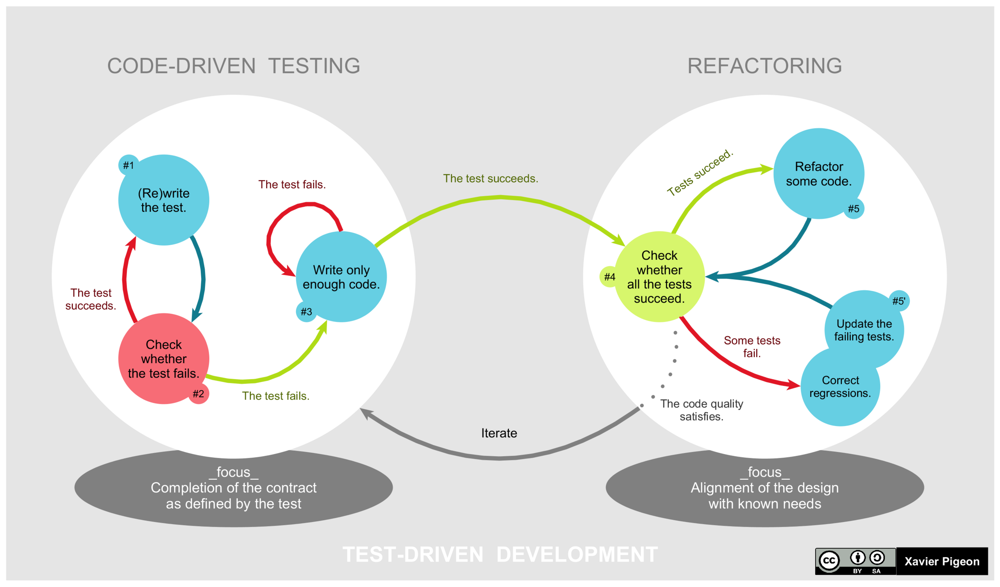

Test-driven development (TDD) on koodi kirjutamise viis, mis hõlmab automaatse üksuse
tasemel testjuhtumi kirjutamist, mis ebaõnnestub, seejärel kirjutatakse täpselt nii
palju koodi, et test läbida, seejärel kujundatakse ümber nii testkood kui ka tootmiskood,
seejärel korratakse teise uue testjuhtumiga.
Alternatiivsed lähenemisviisid automatiseeritud testide kirjutamiseks on kirjutada kogu
tootmiskood enne testkoodi käivitamist või kirjutada kogu testkood enne tootmiskoodi käivitamist.
TDD-ga kirjutatakse mõlemad koos, lühendades seega silumisaega.

| Head | Halvad |
|---|---|
| Põhjalik testi katvus: TDD tagab, et kogu uus kood on kaetud vähemalt ühe testiga, mis toob kaasa parema tarkvara. |
Suurenenud koodimaht: TDD rakendamine võib kaasa tuua suurema koodibaasi, kuna testid suurendavad kirjutatud koodi koguhulka. |
| Suurem usaldus koodi vastu: arendajad saavad koodi usaldusväärsuse ja funktsionaalsuse suhtes suurema kindlustunde. |
Testide vale turvalisus: suur hulk testide läbimist võib mõnikord anda koodi tugevuse osas eksitava turvatunde. |
| Testide suurem usaldus: kuna on teada, et testid ebaõnnestuvad ilma nõuetekohase rakendamiseta, teame, et testid testivad tegelikult juurutamist õigesti. |
Hoolduskulud: suure hulga testide haldamine võib arendusprotsessile lisakulusid lisada. |
| Hästi dokumenteeritud kood: protsessi tulemuseks on loomulikult hästi dokumenteeritud kood, kuna iga test selgitab testitava koodi eesmärki. |
Aeganõudvad testimisprotsessid: testide kirjutamine ja säilitamine võib olla aeganõudev. |
| Nõuete selgus: TDD julgustab nõuetest enne kodeerimise algust selget arusaamist. | Testimiskeskkonna seadistamine: TDD nõuab sobiva testimiskeskkonna seadistamist ja hooldamist. |
| Hõlbustab pidevat integreerimist: see integreerub hästi pidevate integreerimisprotsessidega, võimaldades sagedast koodi värskendamist ja testimist. |
Õppimisraskus: TDD tavade õppimiseks kulub aega ja vaeva. |
| Suurendab tootlikkust: paljud arendajad leiavad, et TDD suurendab nende tootlikkust. | Liigne keerukus: TDD ületähtsustamine võib viia koodini, mis on keerulisem kui vaja. |
| Tugevdab koodi vaimset mudelit: TDD aitab luua koodi struktuuri ja käitumise tugeva vaimse mudeli. | Üldise disaini tähelepanuta jätmine: liiga kitsalt testide sooritamisele keskendumine võib mõnikord viia tarkvarakujunduse suurema pildi tähelepanuta jätmiseni. |
| Rõhk disainil ja funktsionaalsusel: see julgustab keskenduma programmi disainile, liidesele ja üldisele funktsionaalsusele. |
Suurenenud kulud: TDD jaoks vajalik lisaaeg ja ressursid võivad põhjustada suuremaid arenduskulusid. |
| Vähendab silumise vajadust: tuvastades probleemid arendusprotsessi varajases staadiumis, vähendab TDD vajadust ulatusliku silumise järele hiljem. |
|
| Süsteemi stabiilsus: TDD-ga arendatud rakendused kipuvad olema stabiilsemad ja vähem vigased. |